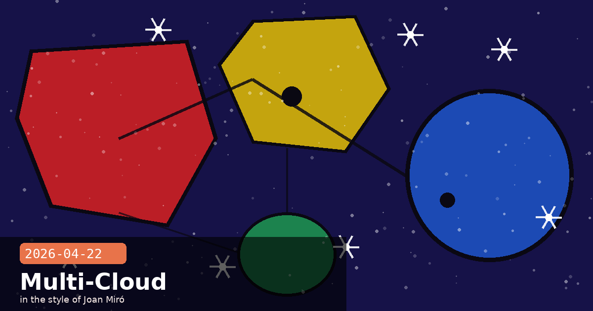

Cloud Next Live, Claude Code Pro Pricing Reversal & Multi-Cloud Patterns

🧭 Google Cloud Next 2026 Opens: Anthropic's Enterprise Agent Architecture Goes Live in Las Vegas
Google Cloud Next 2026 opened today at Mandalay Bay, Las Vegas — and Anthropic's presence on the show floor is the clearest live demonstration yet of what the multi-cloud Claude strategy looks like when it is actually running. Booth #2021 in the AI/ML pavilion is running a continuous demo of Claude Managed Agents operating natively inside Vertex AI's orchestration layer, handling multi-step enterprise tasks end-to-end without leaving Google Cloud's compliance boundary. The five sessions Anthropic is delivering across the April 22–24 programme collectively make one argument: the "after software" era is not a roadmap item — it is deployable today.
What Anthropic is actually showing on the floor
The core live demo at Booth #2021 strings together four Claude capabilities that were announced separately over the past six weeks but are now running as a single integrated workflow:
Vertex AI Managed Agents integration. Claude Managed Agents running natively inside Vertex AI's agent orchestration layer, with Google Cloud's Vertex-native checkpointing handling session state — no Anthropic-side agent infrastructure required. This is the version that uses Google's checkpoint storage rather than Anthropic's, which matters for GCP-committed enterprises with data residency requirements.
Claude Code for GCP infrastructure. Live Terraform generation, BigQuery schema inference, and Pub/Sub event processing written and deployed by Claude Code within the demo — targeting the segment of developers who live in gcloud and want Claude as a native GCP collaborator rather than a generic coding tool.
Shopify Sidekick on Vertex. Shopify's Claude-powered commerce assistant is running on Vertex AI and is shown handling merchant queries, generating product descriptions, and analysing store performance metrics — one of the clearest enterprise-scale production deployments of Claude on Google Cloud.
Joint safety and governance session with Google. A co-presented session on combining Anthropic's Constitutional AI principles with Google's Responsible AI framework for regulated enterprise deployments — targeting compliance teams who need a documented governance framework before any AI goes to production.
The multi-cloud story at full resolution
Yesterday's Amazon announcement ($5B investment, $100B AWS commitment) and today's Google Cloud Next presence sit in apparent tension. In practice, they represent a deliberate two-platform strategy: AWS is Anthropic's primary inference and training infrastructure, receiving the deepest compute commitments. Google Cloud is Anthropic's primary enterprise distribution channel for the GCP ecosystem — the partnership (up to one million TPUs, announced October 2025) supplements rather than competes with the AWS relationship. The Cloud Next presence is a reminder that this is not a forced choice for enterprise architects: Claude's availability on all three major clouds (AWS, Google Cloud, Azure) means you can adopt Claude inside whichever procurement and compliance track your organisation is already on.
If your team is GCP-first
The Vertex AI Managed Agents integration is the most significant practical output of today's Cloud Next sessions. The Vertex-native checkpoint mechanism means that Claude agent sessions can be paused and resumed across GCP's infrastructure without exposing session state to Anthropic's systems — a meaningful data residency boundary for heavily regulated environments. This capability was not available in Claude's earlier Vertex AI integration; it landed with the Managed Agents public beta in April.
Google Cloud NextVertex AIManaged AgentsClaude Codemulti-cloudTerraformShopifyenterpriseGCP
🧭 Claude Code Briefly Vanished from the $20 Pro Plan — and Was Back Within Six Hours
A pricing experiment gone public: on the afternoon of April 21, Anthropic silently updated its pricing pages and documentation to show Claude Code as a Max-plan-only feature, effectively requiring a jump from $20/month to $100–$200/month for existing Claude Code users on the Pro plan. By the morning of April 22, both the landing page and the docs had been reverted. Anthropic's Head of Growth, Amol Avasare, confirmed on Twitter that the change was "a small test on approximately 2% of new prosumer signups" and was never intended to roll out broadly — but the speed and scale of the developer backlash made the reversal happen faster than the timeline might otherwise have suggested.
What the test showed — and what Avasare hinted at next
The incident surfaced several things simultaneously:
The scale gap between Pro and Max is felt immediately. Claude Code users on the $20 Pro plan represent a significant portion of Anthropic's developer ecosystem, including many users outside the United States and Europe for whom $100/month is a genuinely prohibitive price point. The backlash was cross-geography and cross-developer-seniority — not just the US tech Twitter crowd.
Competitive context matters. OpenAI's Codex remains available at lower price points. Any pricing change that moves Claude Code out of Pro effectively cedes the low-end developer segment — a segment Anthropic has publicly stated it wants to retain for long-term ecosystem reasons.
A restructure is coming, just not this way. Avasare's most notable comment was that "usage has changed a lot and our current plans weren't built for this." This is a strong signal that Anthropic intends to restructure its tier boundaries in the near term — probably introducing a new intermediate tier between Pro ($20) and Max ($100–$200) that captures Claude Code's heavy users without stranding the broader developer base on either extreme.
What this means if you are on the Pro plan
Claude Code access on Pro is restored as of April 22. However, Avasare's comment makes it likely that plan restructuring is coming within weeks or months — not years. If you are building a product or workflow that depends on Claude Code at Pro pricing, it is worth monitoring Anthropic's pricing announcements carefully in Q2 2026. The safest hedge for teams is to abstract your Claude Code invocations behind an internal service layer so that a pricing-tier migration does not require touching application code.
Claude CodePro planMax planpricingdeveloper communityplan restructuring
🧭 Bedrock vs Vertex AI: A Decision Framework for Claude Multi-Cloud Deployments
With Claude now live on all three major clouds and both the AWS and Google Cloud partnerships deepened this week, teams are increasingly asking the same question: if you can run Claude on Amazon Bedrock and on Vertex AI, which should you actually use for a new project? The answer is almost never "both simultaneously" — it is a genuine architectural decision with meaningful cost, compliance, and capability differences. Today's Cloud Next sessions made the Vertex-specific capabilities more concrete, so this is a good moment to lay out the decision framework.
Start with your cloud commitment, not the AI features
The single biggest determinant of which Claude cloud is right for a project is not Claude's feature set — both Bedrock and Vertex support the same model APIs — it is your organisation's existing cloud commitment and the compliance controls that come with it:
AWS-first organisations → Bedrock. Bedrock now has GA status in 27 regions with full IAM integration, VPC PrivateLink support, HIPAA BAA coverage, and FedRAMP compliance. If your data is already in S3, your IAM policies are already written, and your teams know Boto3, Bedrock is zero-friction Claude access. The Reserved Throughput model on Bedrock is also well-suited to predictable high-volume enterprise workloads.
GCP-first organisations → Vertex AI. Claude on Vertex AI uses Google's standard Vertex SDK, Google's IAM and VPC-SC controls, and now supports Vertex-native checkpointing for Managed Agents — which means session state stays inside your Google Cloud project boundary. If your data is in BigQuery, your teams use gcloud, and your compliance posture is built around Google Cloud's controls, Vertex AI is the right Claude surface.
Multi-cloud by design → abstract at the service layer. If your architecture genuinely spans clouds, do not call Bedrock or Vertex AI directly from application code. Build a thin internal Claude gateway service (a single HTTP endpoint your apps hit) that routes to whichever cloud surface is appropriate for a given request. This lets you migrate between surfaces without touching application code — and is the right hedge given that pricing and feature parity between the two platforms will continue to shift.
Feature differences that actually matter today
Managed Agents. Available on both, but the Vertex AI version now supports Vertex-native checkpointing (announced at Cloud Next today). The Bedrock version uses Anthropic's checkpoint infrastructure. For GCP-committed enterprises with strict data residency, this is a meaningful difference in favour of Vertex.
Prompt caching. Available on Bedrock; Vertex AI support is rolling out in Q2 2026. If prompt caching is critical to your cost model today, Bedrock has an edge.
Model availability. Both surfaces support Claude Opus 4.7, Sonnet 4.6, and Haiku 4.5. Bedrock typically receives new models within 1–2 weeks of the API GA; Vertex AI has been within 2–3 weeks. Neither is a practical bottleneck at the current release cadence.
Pricing. Both charge the same per-token rates as the direct Anthropic API. Bedrock's Reserved Throughput adds a predictable-commitment pricing model not available on Vertex. Vertex's billing is purely on-demand.
# Minimal multi-cloud Claude gateway pattern (Python)
# Route to Bedrock or Vertex based on environment config
import os
import anthropic
def get_claude_client():
cloud = os.environ.get("CLAUDE_CLOUD", "anthropic")
if cloud == "bedrock":
return anthropic.AnthropicBedrock(
aws_region=os.environ["AWS_REGION"]
)
elif cloud == "vertex":
return anthropic.AnthropicVertex(
project_id=os.environ["GCP_PROJECT_ID"],
region=os.environ["GCP_REGION"]
)
else:
return anthropic.Anthropic() # direct API
client = get_claude_client()
response = client.messages.create(
model="claude-opus-4-7",
max_tokens=1024,
messages=[{"role": "user", "content": "Hello from the gateway"}]
)
print(response.content[0].text)
The pattern above lets you switch between all three Claude surfaces by changing a single environment variable — no application code changes required. Extend it with a retry/fallback layer to gain resilience if one surface has an outage.